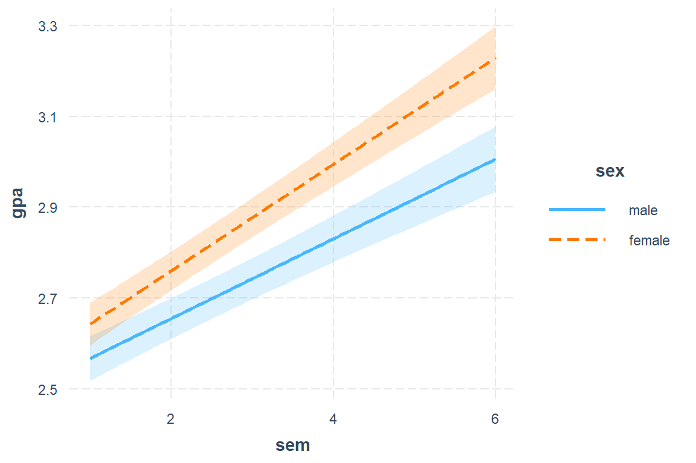

13 MLM, Longitudinal: RCT - Exercise and Diet
library(tidyverse) # all things tidy
library(pander) # nice looking genderal tabulations
library(furniture) # nice table1() descriptives
library(texreg) # Convert Regression Output to LaTeX or HTML Tables
library(psych) # contains some useful functions, like headTail
library(performance) # ICC calculations
library(interactions)
library(sjPlot) # Visualization for Models
library(effects) # Effec displays for Models
library(lme4) # non-linear mixed-effects models13.1 The dataset
This comes from a Randomized Controled Trial.
data_raw <- read.table("https://raw.githubusercontent.com/CEHS-research/data/master/MLM/exercise_diet.txt",
header = TRUE,
sep = ",")Rows: 120
Columns: 5
$ id <int> 1, 1, 1, 1, 2, 2, 2, 2, 3, 3, 3, 3, 4, 4, 4, 4, 5, 5, 5, 5...
$ exertype <int> 1, 1, 1, 1, 1, 1, 1, 1, 1, 1, 1, 1, 1, 1, 1, 1, 1, 1, 1, 1...
$ diet <int> 1, 1, 1, 1, 1, 1, 1, 1, 1, 1, 1, 1, 1, 1, 1, 1, 1, 1, 1, 1...
$ pulse <int> 90, 92, 93, 93, 90, 92, 93, 93, 97, 97, 94, 94, 80, 82, 83...
$ time <int> 0, 228, 296, 639, 0, 56, 434, 538, 0, 150, 295, 541, 0, 12...data_long <- data_raw %>%
dplyr::mutate(id = id %>% factor) %>%
dplyr::mutate(exertype = exertype %>%
factor(levels = 1:3,
labels = c("At Rest",
"Leisurely Walking",
"Moderate Running"))) %>%
dplyr::mutate(diet = diet %>%
factor(levels = 1:2,
labels = c("low-fat",
"non-fat"))) %>%
dplyr::mutate(time_min = time / 60)| id | exertype | diet | pulse | time | time_min | |
|---|---|---|---|---|---|---|
| 1 | 1 | At Rest | low-fat | 90 | 0 | 0 |
| 2 | 1 | At Rest | low-fat | 92 | 228 | 3.8 |
| 3 | 1 | At Rest | low-fat | 93 | 296 | 4.93 |
| 4 | 1 | At Rest | low-fat | 93 | 639 | 10.65 |
| 5 | 2 | At Rest | low-fat | 90 | 0 | 0 |
| 6 | 2 | At Rest | low-fat | 92 | 56 | 0.93 |
| 7 | 2 | At Rest | low-fat | 93 | 434 | 7.23 |
| 8 | 2 | At Rest | low-fat | 93 | 538 | 8.97 |
| 9 | 3 | At Rest | low-fat | 97 | 0 | 0 |
| 10 | 3 | At Rest | low-fat | 97 | 150 | 2.5 |
| … | NA | NA | NA | … | … | … |
| 111 | 28 | Moderate Running | non-fat | 140 | 263 | 4.38 |
| 112 | 28 | Moderate Running | non-fat | 143 | 588 | 9.8 |
| 113 | 29 | Moderate Running | non-fat | 94 | 0 | 0 |
| 114 | 29 | Moderate Running | non-fat | 135 | 164 | 2.73 |
| 115 | 29 | Moderate Running | non-fat | 130 | 353 | 5.88 |
| 116 | 29 | Moderate Running | non-fat | 137 | 560 | 9.33 |
| 117 | 30 | Moderate Running | non-fat | 99 | 0 | 0 |
| 118 | 30 | Moderate Running | non-fat | 111 | 114 | 1.9 |
| 119 | 30 | Moderate Running | non-fat | 140 | 362 | 6.03 |
| 120 | 30 | Moderate Running | non-fat | 148 | 501 | 8.35 |
13.2 Exploratory Data Analysis
13.2.1 Participant Summary
In this experiment, both exercise (exertype) and diet (diet) were randomized at the subject level to create a 2x3 = 6 combinations each with exactly 5 participants.
data_long %>%
dplyr::filter(time == 0) %>%
dplyr::group_by(exertype) %>%
furniture::table1("Diet, randomized" = diet,
caption = "Participants",
output = "markdown")| At Rest | Leisurely Walking | Moderate Running | |
|---|---|---|---|
| n = 10 | n = 10 | n = 10 | |
| Diet, randomized | |||
| low-fat | 5 (50%) | 5 (50%) | 5 (50%) |
| non-fat | 5 (50%) | 5 (50%) | 5 (50%) |
13.2.2 Baseline Summary
data_long %>%
dplyr::filter(time == 0) %>%
dplyr::group_by(exertype, diet) %>%
dplyr::summarise(mean = mean(pulse)) %>%
dplyr::ungroup() %>%
tidyr::pivot_wider(names_from = diet,
values_from = mean) %>%
pander::pander(caption = "Baseline Pulse, Means")| exertype | low-fat | non-fat |
|---|---|---|
| At Rest | 90 | 92 |
| Leisurely Walking | 91 | 96 |
| Moderate Running | 94 | 98 |
13.2.3 Raw Trajectories - Person Profile Plot
13.2.3.1 Connect the dots
data_long %>%
ggplot(aes(x = time_min,
y = pulse)) +
geom_point() +
geom_line(aes(group = id)) +
facet_grid(diet ~ exertype) +
theme_bw()
13.2.3.2 Loess - Moving Average Smoothers
data_long %>%
ggplot(aes(x = time_min,
y = pulse,
color = diet)) +
geom_line(aes(group = id)) +
facet_grid(~ exertype) +
theme_bw() +
geom_smooth(method = "loess",
se = FALSE,
size = 2,
span = 5) +
theme(legend.position = c(0.08, 0.85),
legend.background = element_rect(color = "black")) +
labs(title = "Raw Pulse Trajectories",
subtitle = "By Exercise and Diet Groupings",
x = "Time (Minutes Post-Baseline)",
y = "Pulse (Beats per Minute)",
color = "Diet Plan")
13.3 Multilevel Modeling
13.3.1 Null Model
| Model 1 | |
|---|---|
| (Intercept) | 102.13 (2.54)*** |
| AIC | 963.89 |
| BIC | 972.25 |
| Log Likelihood | -478.95 |
| Num. obs. | 120 |
| Num. groups: id | 30 |
| Var: id (Intercept) | 165.84 |
| Var: Residual | 109.39 |
| p < 0.001; p < 0.01; p < 0.05 | |
13.3.2 ICC & R-squared
# Intraclass Correlation Coefficient
Adjusted ICC: 0.603
Conditional ICC: 0.603# R2 for Mixed Models
Conditional R2: 0.603
Marginal R2: 0.00013.3.3 Add fixed effects: level specific
13.3.3.1 Fit nested models
# Null Model (random intercept only)
fit_lmer_0ml <- lmerTest::lmer(pulse ~ 1 + (1 | id),
data = data_long,
REML = FALSE)
# Add quadratic time
fit_lmer_1ml <- lmerTest::lmer(pulse ~ time_min + I(time_min^2) + (1 | id),
data = data_long,
REML = FALSE)
# Add main effects for 2 interventions (person-specific, i.e. level-2 factors)
fit_lmer_2ml <- lmerTest::lmer(pulse ~ diet + exertype + time_min + I(time_min^2) + (1 | id),
data = data_long,
REML = FALSE)
# Add interaction between level-2 factors
fit_lmer_3ml <- lmerTest::lmer(pulse ~ diet*exertype + time_min + I(time_min^2) + (1 | id),
data = data_long,
REML = FALSE)
# Add exercise interacting with [time & time-squared]
fit_lmer_4ml <- lmerTest::lmer(pulse ~ diet*exertype + exertype*time_min + exertype*I(time_min^2) + (1 | id),
data = data_long,
REML = FALSE)
# Add diet interacting with [time & time-squared]
fit_lmer_5ml <- lmerTest::lmer(pulse ~ diet*exertype*time_min + diet*exertype*I(time_min^2) + (1 | id),
data = data_long,
REML = FALSE)| Model 1 | Model 2 | Model 3 | Model 4 | Model 5 | |
|---|---|---|---|---|---|
| (Intercept) | 94.05*** | 79.30*** | 82.15*** | 89.89*** | 89.81*** |
| (2.71) | (2.46) | (2.64) | (2.69) | (2.78) | |
| time_min | 3.57*** | 3.58*** | 3.44*** | 0.24 | 0.37 |
| (0.65) | (0.64) | (0.64) | (0.62) | (0.87) | |
| time_min^2 | -0.21*** | -0.21*** | -0.20*** | -0.01 | -0.03 |
| (0.06) | (0.06) | (0.06) | (0.05) | (0.09) | |
| dietnon-fat | 8.36*** | 2.89 | 1.99 | 2.11 | |
| (2.21) | (3.36) | (3.45) | (3.89) | ||
| exertypeLeisurely Walking | 5.20 | 3.81 | 0.84 | 1.40 | |
| (2.70) | (3.34) | (3.78) | (3.92) | ||
| exertypeModerate Running | 26.43*** | 19.71*** | 0.53 | 5.71 | |
| (2.70) | (3.34) | (3.77) | (3.92) | ||
| dietnon-fat:exertypeLeisurely Walking | 2.83 | 3.70 | 2.53 | ||
| (4.73) | (4.86) | (5.50) | |||
| dietnon-fat:exertypeModerate Running | 13.47** | 14.02** | 3.99 | ||
| (4.74) | (4.86) | (5.50) | |||
| exertypeLeisurely Walking:time_min | 1.17 | 1.09 | |||
| (0.87) | (1.17) | ||||
| exertypeModerate Running:time_min | 8.19*** | 5.77*** | |||
| (0.90) | (1.20) | ||||
| exertypeLeisurely Walking:time_min^2 | -0.07 | -0.08 | |||
| (0.08) | (0.11) | ||||
| exertypeModerate Running:time_min^2 | -0.48*** | -0.33** | |||
| (0.08) | (0.11) | ||||
| dietnon-fat:time_min | -0.17 | ||||
| (1.14) | |||||
| dietnon-fat:time_min^2 | 0.02 | ||||
| (0.10) | |||||
| dietnon-fat:exertypeLeisurely Walking:time_min | 0.21 | ||||
| (1.56) | |||||
| dietnon-fat:exertypeModerate Running:time_min | 4.42** | ||||
| (1.61) | |||||
| dietnon-fat:exertypeLeisurely Walking:time_min^2 | 0.01 | ||||
| (0.14) | |||||
| dietnon-fat:exertypeModerate Running:time_min^2 | -0.27 | ||||
| (0.15) | |||||
| AIC | 927.70 | 884.96 | 881.11 | 785.34 | 769.23 |
| BIC | 941.64 | 907.26 | 908.99 | 824.36 | 824.98 |
| Log Likelihood | -458.85 | -434.48 | -430.56 | -378.67 | -364.62 |
| Num. obs. | 120 | 120 | 120 | 120 | 120 |
| Num. groups: id | 30 | 30 | 30 | 30 | 30 |
| Var: id (Intercept) | 167.58 | 19.46 | 11.03 | 24.13 | 25.64 |
| Var: Residual | 67.47 | 67.47 | 67.52 | 20.95 | 15.32 |
| p < 0.001; p < 0.01; p < 0.05 | |||||
13.3.3.2 Evaluate Model Fit, i.e. variable significance
Data: data_long
Models:
fit_lmer_1ml: pulse ~ time_min + I(time_min^2) + (1 | id)
fit_lmer_2ml: pulse ~ diet + exertype + time_min + I(time_min^2) + (1 | id)
fit_lmer_3ml: pulse ~ diet * exertype + time_min + I(time_min^2) + (1 | id)
fit_lmer_4ml: pulse ~ diet * exertype + exertype * time_min + exertype * I(time_min^2) +
fit_lmer_4ml: (1 | id)
fit_lmer_5ml: pulse ~ diet * exertype * time_min + diet * exertype * I(time_min^2) +
fit_lmer_5ml: (1 | id)
npar AIC BIC logLik deviance Chisq Df Pr(>Chisq)
fit_lmer_1ml 5 927.70 941.64 -458.85 917.70
fit_lmer_2ml 8 884.96 907.26 -434.48 868.96 48.742 3 1.480e-10 ***
fit_lmer_3ml 10 881.11 908.99 -430.56 861.11 7.847 2 0.01977 *
fit_lmer_4ml 14 785.34 824.36 -378.67 757.34 103.776 4 < 2.2e-16 ***
fit_lmer_5ml 20 769.23 824.98 -364.62 729.23 28.108 6 8.968e-05 ***
---
Signif. codes: 0 '***' 0.001 '**' 0.01 '*' 0.05 '.' 0.1 ' ' 1performance::compare_performance(fit_lmer_1ml,
fit_lmer_2ml,
fit_lmer_3ml,
fit_lmer_4ml,
fit_lmer_5ml,
rank = TRUE)# Comparison of Model Performance Indices
Model | Type | AIC | BIC | R2_conditional | R2_marginal | ICC | RMSE | BF | Performance_Score
----------------------------------------------------------------------------------------------------------------------------
fit_lmer_5ml | lmerModLmerTest | 769.23 | 824.98 | 0.94 | 0.85 | 0.63 | 3.46 | 2.15e+25 | 93.96%
fit_lmer_4ml | lmerModLmerTest | 785.34 | 824.36 | 0.92 | 0.83 | 0.54 | 4.08 | 2.93e+25 | 90.27%
fit_lmer_2ml | lmerModLmerTest | 884.96 | 907.26 | 0.75 | 0.68 | 0.22 | 7.64 | 2.92e+07 | 21.71%
fit_lmer_3ml | lmerModLmerTest | 881.12 | 908.99 | 0.75 | 0.71 | 0.14 | 7.80 | 1.23e+07 | 19.91%
fit_lmer_1ml | lmerModLmerTest | 927.70 | 941.64 | 0.75 | 0.12 | 0.71 | 7.22 | 1.00 | 16.19%
Model fit_lmer_5ml (of class lmerModLmerTest) performed best with an overall performance score of 93.96%.13.3.4 Final Model
Refit via REML
fit_lmer_5re <- lmerTest::lmer(pulse ~ diet*exertype*time_min +
diet*exertype*I(time_min^2) + (1 | id),
data = data_long,
REML = TRUE)13.3.4.1 Visualize

interactions::interact_plot(fit_lmer_5re,
pred = time_min,
modx = diet,
mod2 = exertype,
interval = TRUE)
effects::Effect(focal.predictors = c("diet", "exertype", "time_min"),
mod = fit_lmer_5re) %>%
data.frame %>%
ggplot(aes(x = time_min,
y = fit,
fill = diet,
color = diet)) +
geom_line(size = 1.5) +
theme_bw() +
facet_grid(~ exertype) +
theme(legend.position = c(0.08, 0.85),
legend.background = element_rect(color = "black")) +
labs(title = "Raw Pulse Trajectories",
subtitle = "By Exercise and Diet Groupings",
x = "Time (Minutes Post-Baseline)",
y = "Estimated Marginal Mean\nPulse (Beats per Minute)",
fill = "Diet Plan",
color = "Diet Plan")
effects::Effect(focal.predictors = c("diet", "exertype", "time_min"),
mod = fit_lmer_5re,
xlevels = list("time_min" = seq(from = 0,
to = 12,
by = 0.5))) %>%
data.frame %>%
dplyr::mutate(diet = fct_rev(diet)) %>% # reverse the order of the levels
ggplot(aes(x = time_min,
y = fit)) +
geom_ribbon(aes(ymin = fit - se,
ymax = fit + se,
fill = diet),
alpha = 0.3) +
geom_line(aes(linetype = diet),
size = 1) +
theme_bw() +
facet_grid(~ exertype) +
theme(legend.position = c(0.12, 0.85),
legend.background = element_rect(color = "black"),
legend.key.width = unit(2, "cm")) +
labs(title = "Raw Pulse Trajectories",
subtitle = "By Randomized Exercise and Diet Intervention",
x = "Time (Minutes Post-Baseline)",
y = "Estimated Marginal Mean\nPulse (Beats per Minute)",
fill = "Diet Plan",
color = "Diet Plan",
linetype = "Diet Plan") +
scale_fill_manual(values = c("black", "gray50")) +
scale_linetype_manual(values = c("solid", "longdash")) +
scale_x_continuous(breaks = seq(from = 0, to = 14, by = 5))